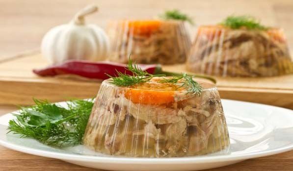
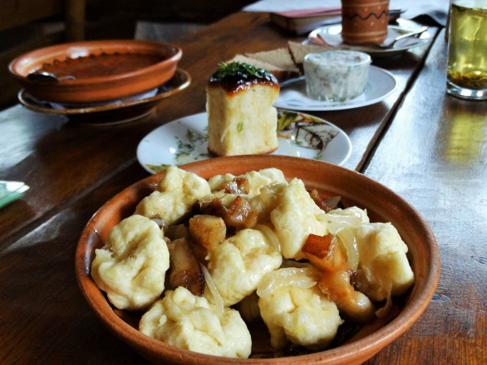
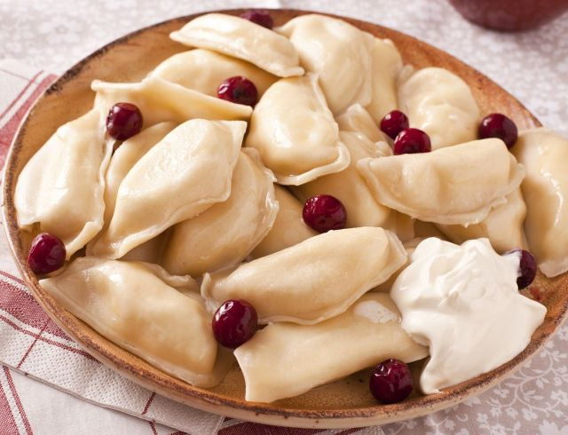

6 лучших блюд украинской кухни
Борщ
Какой же украинец без борща? Этим традиционным первым блюдом обязательно потчуют иностранцев. В кулинарных книгах мы найдем более 50 рецептов борща, ведь в каждом регионе его готовят по-разному. Наваристый мясной, приправленный салом… Или же постный с фасолью либо грибами – такой варят во время поста, и вегетарианцы тоже будут довольны. Вместо мяса можно класть рыбу. Кроме традиционных свеклы, картофеля, моркови, лука, капусты и томатов, чего только ни добавляют в борщ для пикантности! В некоторых рецептах есть даже яблоки, сухофрукты, чернослив! К борщу часто подают пампушки с чесноком.

Сало
Недаром говорят: сало – украинский наркотик. Без него нам просто никуда. А сколько анекдотов о сале и украинцах! Один кум говорит другому: «Ты слышал, что от сала развивается склероз?» А тот ему в ответ: «А я-то думаю, как съем утром кусок сала, так целый день и не вспоминаю, что есть хочется!» Существует множество рецептов засолки сала. Простейший: измельчить чеснок, смешать с перцем, натереть смесью подчеревину или сало и выдержать в холодильнике дня три. Можно добавить душистые специи.

Холодец
Не все иностранцы «поймут» наш холодец – заливную закуску из разных видов мяса. Зато венгры точно оценят: у них холодец – тоже национальное блюдо, там даже проводятся фестивали холодца. Украинцы традиционно подают холодец с хреном, горчицей.
Полтавские галушки
«Полтавскими галушками» часто называют жителей одноименной области – настолько узнаваемым стало их региональное блюдо. Галушки бывают как без начинки, так и с мясом, печенкой, грибами. В Полтаве ежегодно проходит фестиваль, посвященный галушке, и даже установлен памятник уважаемому блюду.
Вареники
«Родные братья» галушек – вареники – это часть украинского фольклора. Помните – «А мой милый вареничков хочет…»? В отличие от галушек, начинки вареников могут быть более разнообразными: и творог, и овощи, и ягоды. В городе Альберта в Канаде силами украинской диаспоры установлен 9-метровый памятник варенику. Был такой монумент и в Украине – в Черкассах, но, несмотря на популярность, его демонтировали: в здание рядом переселился суд, и соседство его с вареником сочли несовместимым. В Луцке проводится фестиваль национальной кухни, который вырос из фестиваля вареников.
Котлеты по-киевски
Интересно, что на «авторство» рецепта котлет из отбитого куриного филе, в которое заворачивается кусочек сливочного масла, претендуют, кроме Украины, Франция и Америка. Кулинарные легенды гласят, что котлеты по-киевски могли прийти оттуда. Они были очень популярны в советских ресторанах, потом их незаслуженно забыли, но сейчас в Киеве можно найти места, где подают это блюдо.